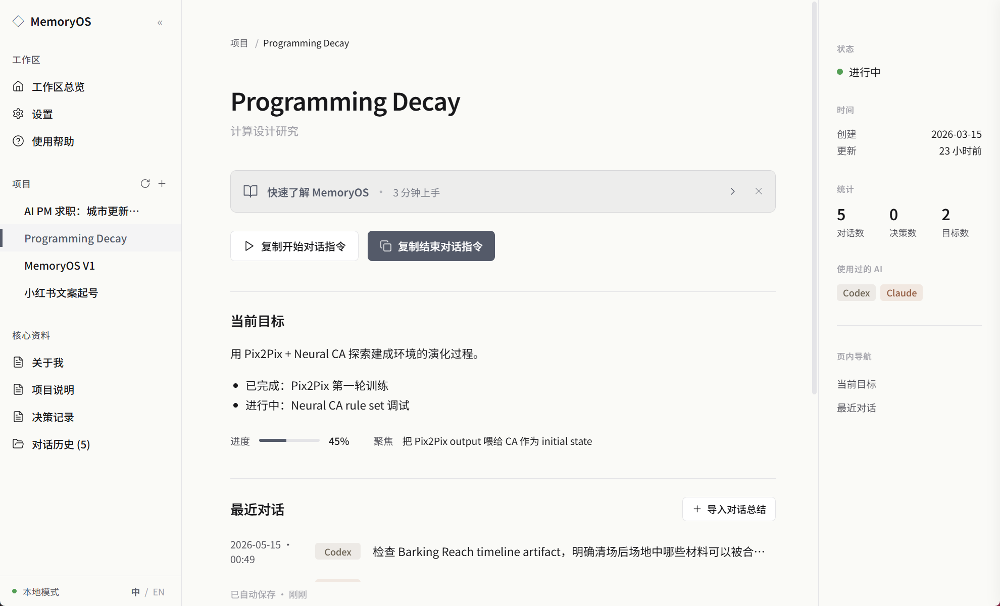
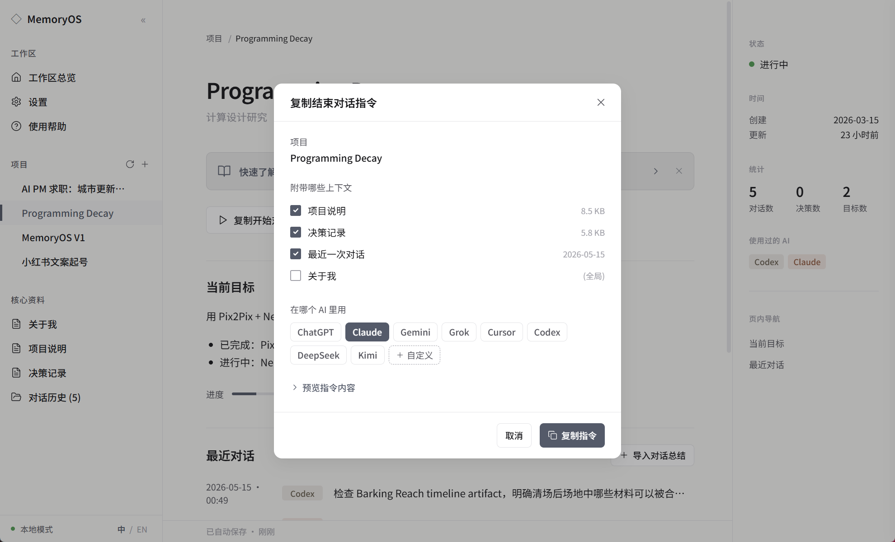

MemoryOS
跨 AI 的本地工作记录 —— 按项目整理, 每条可追溯来源。
我用一套 Markdown 文件夹在 ChatGPT、Claude、Cursor、Gemini 之间手动同步上下文 3 个月。每次开新对话都要重新告诉 AI 我是谁、上次到哪了, 复制粘贴自己是谁三个月之后会想砸键盘。
ChatGPT Memory 记住的是"你是谁", Claude Projects 只对 Claude 生效, Notion AI 锁在自己的工作区。但没有工具帮你记住"这件事做到哪了、为什么这么决定的" —— 我把这件事做成了一个 1.7 MB 的桌面 app。
Why I built it from a personal pain
3 个月里我每天在 4 个 AI 之间切换工作 —— ChatGPT 做长文、Claude 做深度推理、Cursor 做代码、Gemini 做信息检索。我维护了一个 Markdown 文件夹手动同步上下文, 但每次开新对话 (一天 5-10 次) 都要先粘 200 行"我是谁 / 我现在做什么 / 上次到哪了"。
更深的痛: 不是粘贴慢, 是粘贴让我无法信任 AI 的连续性。每次都从零开始, 我得在 prompt 里反复声明边界 ("不是新手, 不要从头解释"), 因为模型记不住。结果是大量心智被花在"教 AI 我是谁"上, 而不是真正的工作。
ChatGPT Memory 记住的是"你喜欢简洁回答"这类个人偏好, 不是"上次的项目做到哪了"。Notion AI、Claude Projects 同理 —— 它们帮 AI 认识你, 但不帮你管理跨 AI 的工作进展。没有产品把"事情做到哪了、为什么这么决定"按项目整理好, 让你下次打开任何 AI 都能接上。
把工作记录从各个 AI 里抽出来, 按项目整理, 存在用户自己电脑上, 每条记录标注来源 —— 这件事没人做。所以我做了。
市场定位 — 为什么是这个空白象限
把现有"AI 工作记录 / 知识管理"工具按两个维度切: 横轴是「只对一个 AI 生效 ←→ 跨所有 AI」, 纵轴是「数据在云端 ←→ 数据在本地」。
左下半区被 ChatGPT Memory / Claude Projects / Gemini Gems 占满。它们记住的是"你是谁"（个人偏好、身份信息）, 离开产品即失效, 且不记录项目进展。
左上几乎为空 —— 单一 AI 厂商没有动力让用户把记录带走。
右下是 Notion AI / mem0 / Obsidian + AI 插件 这一带。mem0 跨 AI 但只记住个人画像（"你是设计师"）, 不记录项目进展; Notion AI 绑定自己的平台。
右上角 (AI-agnostic + 本地优先) 是真正的空白。 MemoryOS 落在这里 —— 不绑定任何 AI 厂商、不绑定任何 SaaS 平台、所有数据是用户电脑上的 Markdown 文件。
这不是巧合。"本地 + 跨 AI" 是工程上简单、商业上昂贵的承诺: 不能锁用户 = 不能持续收订阅费。MemoryOS 现阶段优先验证"按项目整理 + 数据在用户本地"这个产品立场是否成立, 而不是变现路径 —— 如果立得住, 后面的形态再讨论。
用户旅程 — 谁用、怎么用
USER · INTERACTIONMemoryOS 服务一类核心用户: 重度多 AI 切换的知识工作者 —— 研究者 / 设计师 / PM / 工程师, 每天在 3+ 个 AI 之间切换, 已经感到"复制粘贴自己是谁"的真实痛感, 但还没到自建 RAG / 自己写 prompt template 的工程门槛。
粘到任意 AI
MemoryOS 不参与
粘到当前 AI
结构化总结
用户决定写入
工作流是一个用户主动驱动的 5 步循环:
-
01
Start
在 MemoryOS 选当前项目 → 点【复制开始对话指令】→ 粘到任意 AI。AI 读取上下文, 30 秒续上。
-
02
Work
正常和 AI 工作, MemoryOS 不参与。
-
03
End
工作差不多了 → 在 MemoryOS 点【复制结束对话指令】→ 选当前在用的 AI (ChatGPT / Claude / Gemini / Grok / Cursor / Codex / DeepSeek / Kimi 或自定义) → 粘到 AI。
-
04
AI 总结
AI 按 MemoryOS 提供的标准化模板, 输出一份结构化对话总结 (固定 Markdown 格式)。
-
05
Review → Save
用户把总结复制回 MemoryOS, 点【+ 导入对话总结】, 按风险分级勾选要写入的内容, Save。

注意第 5 步的设计选择: 不是 AI 直接写文件, 是用户勾选 checkbox 确认每一行写入。这是 MemoryOS 最重要的产品立场 —— AI 总结、用户确认。下一节展开。
How it works — 系统架构与产品边界
Gemini / Grok / etc.
技术栈三层架构, 全部本地:
-
1. Storage Layer INPUT
用户主目录下的 Markdown 文件 (默认
~/Documents/MemoryOS/), 包含about_me.md(长期身份偏好) +projects/<项目名>/{project.json, 00_context.md, decisions.md, sessions/}。任何编辑器都能打开, 整个文件夹拷贝就是完整备份。这一层不是数据库, 是文件系统。 故意的。 -
2. App Layer SYSTEM LOGIC
Tauri 1.5 框架, Rust 内核 + React 18 + TypeScript UI。负责: 项目管理 (CRUD) / 上下文打包 / 剪贴板写入 / 风险分级导入 / 系统回收站删除 + Undo / 完整中英双语 i18n。打包后单个 Windows 安装包 ~1.7 MB (比 Electron 同类小 50 倍)。
-
3. Bridge Layer OUTPUT
不是 API 集成, 是剪贴板桥接。MemoryOS 把上下文 / 标准化指令写进剪贴板, 用户粘到任意 AI; AI 输出复制回 MemoryOS, 用户勾选保存。这层故意没用 OpenAI API / Claude API —— 保证 AI-agnostic, 同时保证 MemoryOS 永远不读 AI 对话内容 (handoff 必须由用户主动粘贴)。

AI Decision Chain — 哪一步用什么级别的 AI, 哪一步根本不用
MemoryOS 是"用 AI 整理工作记录", 不是"在产品内套 AI"。AI 调用的边界:
| 步骤 | v0.1.1 主导技术 | AI 的位置 |
|---|---|---|
| Storage | 文件系统 | — |
| Start prompt | 模板拼接 (Rust 字符串) | — |
| End prompt | 模板拼接 | — |
| 对话总结生成 | AI 在用户的 AI 工具里跑 | 第 3 方 AI (ChatGPT/Claude/etc) — 不是 MemoryOS 调用 |
| Review & Save | 用户勾选 | — |
唯一的 AI 调用发生在用户的浏览器里, 不在 MemoryOS 内。这是产品立场: MemoryOS 不与 AI 厂商竞争, 也不依赖任何 AI 厂商的 API。Storage / App / Bridge 三层都可以离线工作 —— 只在用户把 prompt 粘到 AI 那一刻才需要网络。
Product Lens
MemoryOS 是一个面向重度多 AI 用户的本地工作记录工具——不记住"你是谁"（那是 ChatGPT Memory 做的事）, 而是记录"这件事做到哪了、为什么这么决定"。
核心用户是每天在 3+ 个 AI 之间切换、同时管着一个持续项目的知识工作者。他们的痛点不是"AI 不认识我"（ChatGPT Memory 已经解决了）, 而是"上次做到哪了, 每次都要重新交代"。
我把工作组织成三个产品立场: 本地优先 (所有数据是用户电脑上的 Markdown, 不上传, 不登录), AI-agnostic (用剪贴板桥接而不是 API 集成, 支持 8 个预置 AI + 自定义), 用户最终决策权 (AI 总结后用户勾选保存, 永远不自动写)。
MVP 聚焦在 Windows v0.1.1 闭环 + 自己日常使用 + 10 个种子用户访谈, 先验证"按项目整理跨 AI 工作记录"这个需求是否真实存在。
主要产品风险是用户不愿意手动 handoff——自动抓取 AI 对话技术上完全可行 (浏览器插件 / API 监听), 但会破坏"不读对话内容"这条产品红线。验证方法: 找 10 个种子用户用 1 个月, 看至少 6 个能否反馈"复制粘贴 handoff 不是负担, 反而是控制感"。如果反馈反过来, 当前定位需要重做。
下一步 ship 的是 v0.2 (2026.08): 多 workspace 切换 + 设置面板 + 深色模式; 同步打 Mac build。v1.0 之前不做 App 内 Markdown 编辑 (避免和 Obsidian / VS Code 重合)。
Decisions & Trade-offs
决策 1 — 本地优先 vs 云同步
云同步是 MemoryOS 现阶段不做的事 —— 不是不能做, 是一个人开发的 demo 还没迭代到那一步。
云同步意味着: 我得做账号系统、后端服务、数据加密、合规审计。当前阶段优先验证核心功能是否成立, 云端同步是未来用户量增长后值得加的能力。
桌面上 3 条路径:
选 B。理由是: v0.1 阶段如果我连本地优先都立不住, 加 E2EE 也没意义。验证: 10 个种子用户测试时如果 ≥6 个主动问"什么时候有云同步", 说明定位本身有问题; 如果他们反过来说"我就是冲着本地存才用", 则定位成立。
决策 2 — 剪贴板桥接 vs 自动抓取 AI 对话
技术上完全可行, 我故意不做。
浏览器插件可以实时读 ChatGPT 网页对话; OpenAI / Anthropic API 可以拿到完整对话 JSON。两条路都能让 MemoryOS"自动"生成 handoff, 用户不用做任何事。
我没做的原因是: 一旦 MemoryOS 能自动读对话, 它就有能力做用户没授权的事 (聚合到第三方分析、跨账号关联画像、商业化数据)。即使我承诺不做, 用户没法验证。剪贴板桥接是技术性承诺, 不是政策性承诺 —— MemoryOS 在代码层面就没有读 AI 对话的能力, 这条限制反过来变成产品立场最锋利的部分。
考虑过的两条路:
选剪贴板。代价: 用户每次 handoff 多 3 次点击。收益: 红线明确, 案例陈述简单 ("我们不读你和 AI 的对话, 也读不到")。
决策 3 — Markdown 纯文本 vs 专有数据库 / 加密格式
如果用户随时能脱离 MemoryOS, 那 MemoryOS 必须值得继续用。
很多 PKM 产品 (Notion / Obsidian / Roam) 在数据存储上有不同程度的锁定: SQLite + 内部 schema, 或加密私有格式, 或必须用自家客户端打开。这给了厂商安全感, 但反过来让用户每次想搬家都得 export + 数据丢失。
MemoryOS 的 Markdown 决策: 用户随时可以删掉 MemoryOS, 用 Obsidian / VS Code / 记事本继续编辑同一个文件夹, 我不会知道也不会管。这意味着 MemoryOS 必须靠"持续提供更好的 handoff 体验"留住用户, 而不是靠"你迁不走"留住用户。
考虑过的两条路:
选纯 Markdown + project.json 元数据。代价: 全文搜索 / 跨项目引用等高级功能更难做。收益: 用户拿走文件夹就是完整备份, 不存在"数据被锁"焦虑。
决策 4 — 风险分级导入 + 用户勾选, 不做自动写
AI 写的东西默认不能直接进文件。
v0.1 早期版本设计是"AI 输出总结 → MemoryOS 自动保存"。第一次 dogfood 时 AI 给我的"关于我"总结里加了一条"用户对 ChatGPT 工作流极度熟练" —— 听起来无害, 但下次任何 AI 读到都会假设我是高水平用户, 砍掉基础解释。两周后我发现这个偏差时, 已经被这条假设误导 3 次。
所以 v0.1.1 改成风险分级 + 用户勾选:
考虑过的两条路:
选风险分级。代价: review 步骤增加摩擦。收益: hidden state 不再悄悄累积。
What's Next
路线图
MemoryOS v0.1.1 已经 ship, 但只是第一个能用的版本。下面是 v0.2 / v0.3 / v1.0 三阶段, 按"必须打通的事"组织, 不是功能列表。
多 workspace 切换 + 设置面板
- 多 workspace 支持 (在公司 / 个人 / 写作不同 workspace 之间切换, 不是项目)
- 设置面板 (语言 / 默认 AI / 默认存储路径)
- 深色模式
- 完成 10 个种子用户访谈 + 整理反馈
跨平台 + 代码签名
- Mac (Intel + Apple Silicon) build
- Linux build (Ubuntu / Fedora)
- Windows 代码签名 (消除"未知发行者"警告)
- 第一篇用户写的中文 / 英文文章自然引流 (即刻 / 小红书 / HN)
App 内 Markdown 编辑 + 社区
- App 内 Markdown 编辑 (不只是 viewer, 不重做 Obsidian 但足以小修小补)
- prompt template 社区分享 (用户互相分享 about_me 模板 / 项目说明模板)
- 开源贡献者文档 + Issue triage 流程
北极星指标
每个版本配一个指标, 用来定义"达到没达到"。
- v0.1.1 现状 我自己 dogfood ≥ 1 个月不脱离 + 10 个种子用户安装上 + 至少 3 个走完 1 次完整 Start → Save loop。
- v0.2 · 2026.08 月活 ≥ 30 + 至少 5 位主动反馈一个具体痛点 (而不是"挺好用的") + GitHub stars ≥ 50。
- v0.3 · 2026.10 Mac build 下载量 ≥ Windows 的 30% + 至少 1 篇用户写的真实使用文章 + GitHub stars ≥ 200。
- v1.0 · 2027.Q1 MAU ≥ 200 + 至少 5 个用户提了 PR + Issue 回复中位数 < 48 小时。
已知风险 — 我打算怎么验证 / 怎么 fallback
3 条 disconfirming evidence 我已经知道, 不藏:
用户可能不愿意手动 handoff。
第 3.2 决策的核心权衡是用户体验摩擦 vs 产品立场。如果 10 个种子用户里 ≥ 6 个反馈"复制粘贴太烦, 能不能自动", 当前红线需要重判 —— 可能切到"浏览器插件只读模式 + 用户每次确认", 而不是完全自动抓取。
ChatGPT / Claude 可能自己做项目级记录功能。
如果 AI 平台自己做了"按项目记录工作进展"的功能, MemoryOS 的差异化会缩小。应对方案: MemoryOS 的价值在于"跨所有 AI + 数据在用户本地", 即使各家 AI 自带了项目记录, 用户仍然需要一个不绑定任何 AI 厂商的统一入口。
继续看下去
- 竞品分析 — MemoryOS × mem0 — 亲手使用 mem0 完成三条任务流，和 MemoryOS 做逐项对比
- MArch Thesis — 回到主页继续浏览 Programming Decay / Barking Reach 等其他研究项目
GitHub repo & Download 链接见页面顶部 —— Hero 区下方。